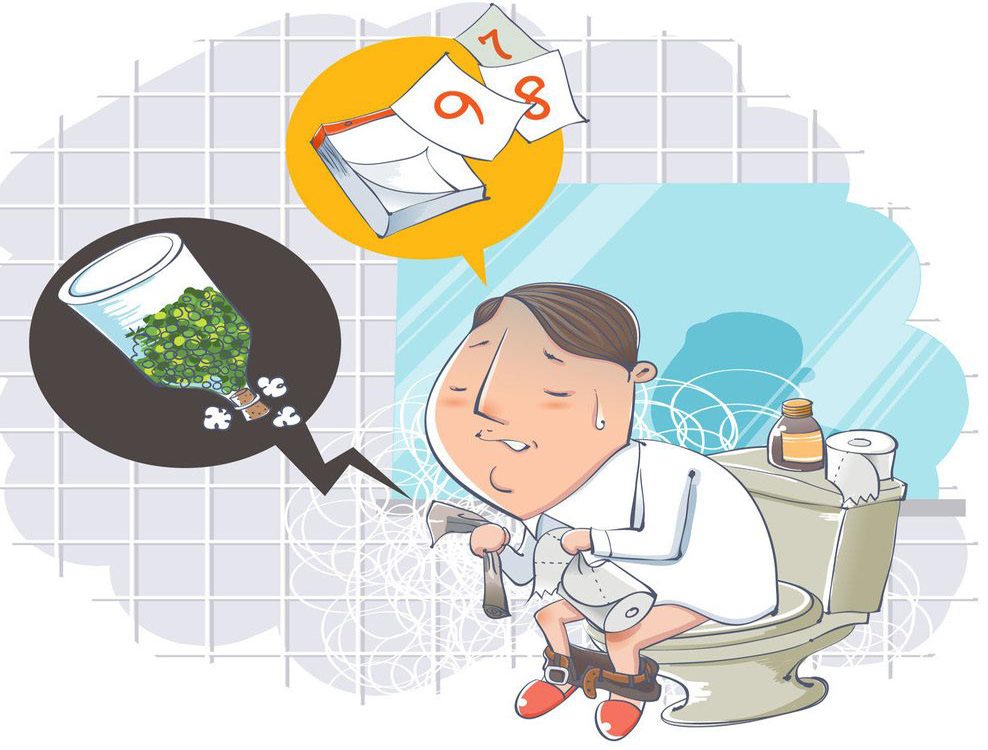

便秘是啥？想拉拉不出来，正常人天天有的排，便秘的人还没别人一次拉的多，大便又黑又硬，太长时间不上厕所，还有“见血”的风险！最大的压力是肛门，痔疮是迟早的事情！你说便秘可怕不可怕！
大多数人便秘首先想的都是拉，没有找到规范系统的方式……因为没有系统和专业的调理方式，等于没得治！那想拉屎怎么办？开塞露大家都试过，市面上各类常润茶，酵素，酵母肯定也吃的不少！

长期不排便会怎么样？肚子胀气，堵得慌，浑身无力，什么时候都想上厕所，除了在马桶上————怎么都拉不出来！而是便秘还会引发的一系列并发症。
看到这里，有一个问题需要考虑，为什么用开塞露也不管用，拉得浑身虚脱，反反复复，最后又给堵住了？排便成了生活中最困难的事情！咨询微信： (点击加微信)
不少人说起便秘总有些不好意思，即使影响到生活了也不愿意去医院，为什么？因为便秘的难受真的无法描述，说不出来！可人吃五谷杂粮，如果排便出现问题，身体也会跟着出现问题，因为大便是身体垃圾，不仅脏还充满了细菌和病毒，排便如果不畅会让大便反复被吸收回体内，长此以往，机体也就会慢性中毒！
凡是排便不畅的，首先是脸色差，发黄，油腻，其次是身体，疲乏，臃肿，尤其是肚子，十个便秘九个大肚子！长期便秘会影响脾胃的运行，造成大肠的传导失常，产生大量毒素堆积，会继发肠胃不适、口臭 、色斑等其他症状。解决便秘光靠拉，行不通！
所以一般疗法很难见效。便秘的有效治疗方法将肠腔内、体内的毒素垃圾全部清除，减少细菌的繁殖，保持肠道内正常菌群，刺激肠黏膜分泌三叶因子，加快坏死黏膜层脱落，加速黏膜新生，从而改善肠道粘液分泌功能，促进肠道收缩蠕动，刺激排便反应，重建结肠平滑肌功能。
咨询微信： 点击加微信，咨询！
首先全面清理身体里的毒素，首先改变的就是尿液变色，也就是神奇的“血尿”，并非真的是尿血，也不是所有人的尿液都会变红，根据体质和“中毒”程度的不同，尿液的颜色都会有区别，有的人则是特别黄。我们都知道清晨第一泡尿是最黄的，这也是人体正常的排毒，而清毒的过程中我们的尿液会比晨尿颜色更深，那是因为排毒是全身的循环，会代谢掉包括毛细血管，比如我们女性的子宫、卵巢，男性生殖系统中的垃圾毒素，泌尿系统以及肠道中的炎症，都会通过尿液首先排出体外，而这个现象，几天内则会消失，不会对身体造成任何影响，首先身体轻松了，晚上睡得就更沉了，睡醒了也不会觉得乏力了！
便秘其实就是不能正常规律的排泄大便，虽然便秘不是病，但它代表你的身体已经出现了问题。 免疫力下降会导致便秘症状，长期便秘也会影响免疫力，它们之间互相作用影响，恶性循环的关系，绝非直接刺激肠道粘膜引发腹泻，在清毒过后，解决排便问题也会更顺畅，人体肠道会变得润滑起来，通过增强一股推动身体正常运行的力量，自主规律的排便，这力量也是帮助免疫力去抵抗和代谢掉身体的毒素和病菌的力量。
恢复正常排便的功能以后，不再是拉不出，排不尽，排后无力感，是一种从未有过的顺畅感受，不少患者形容为“爽”！
因为便秘和免疫力是互相影响的关系，因此经过前两步，排毒及自主排便功能恢复后，免疫系统被“中毒”也会减负不少，免疫力也叫自愈力，经过大量研究采用多味中草药依据君臣佐使的原则重新组方，通过现代工艺研制而成。一个好的治疗方法研制成功，纯天然的解毒剂，可调节机体，补充营养，特别适宜“通”后的补益，妙在“刚刚好”。因为纯天然，特殊炮制后效果更加温和，所以能有效的被身体吸收，又不会造成二次的堵塞，可有效维持和补益身体的免疫机能，恢复人体各个器官的正常生理功能，身体通畅了，循环好了，代谢也会提高，这样搭建形成的身体的绿色循环屏障，也不存在复发或者依赖性可言了，也是目前被社会所认可在治疗便秘方面是比较有效的办法。
添加微信:专业指导，调理便秘！免费解答，帮你找到便秘原因，正确调理便秘，恢复自主排便，更自信，更年轻！
| ,咨询便秘健康调理 | 点开微信 |